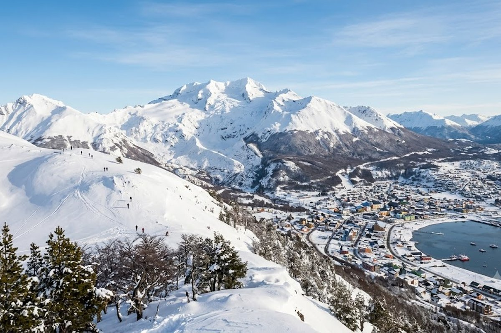
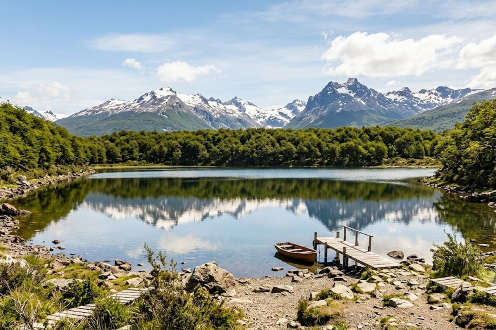
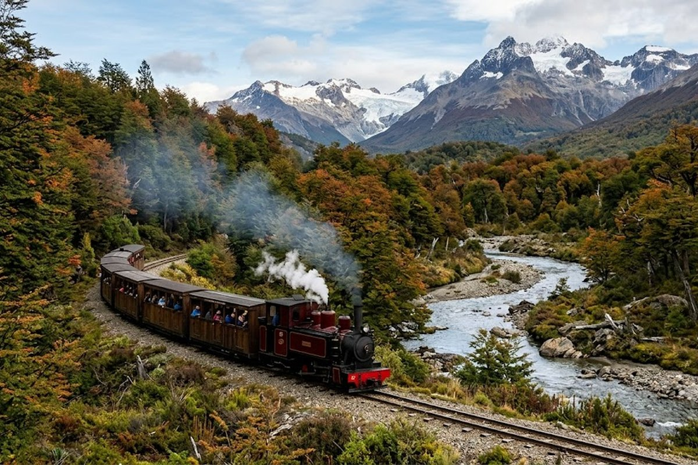
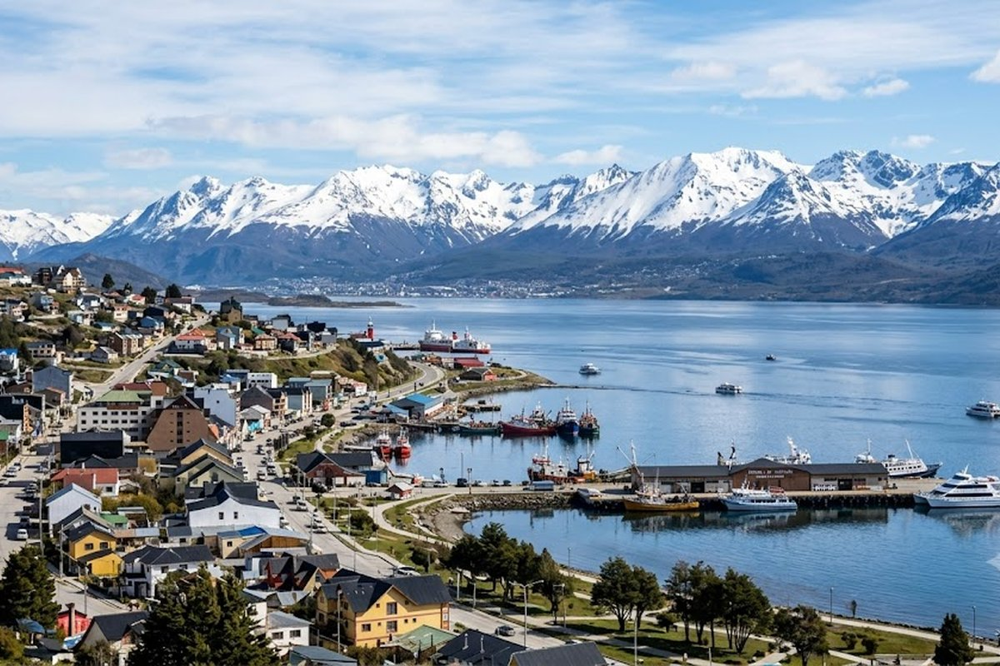

La ciudad más austral del planeta. Glaciares, pingüinos, bosques de lengas y el silencio profundo de la Patagonia extrema.
Ushuaia no es un destino más — es el lugar donde el mundo termina y empieza algo distinto. A orillas del Canal Beagle, rodeada de montañas nevadas y bosques subantárticos, la ciudad más austral del planeta ofrece una experiencia única: naturaleza salvaje a pocos minutos del centro, pingüinos de Magallanes a 20 minutos en barco, y el mítico Parque Nacional Tierra del Fuego donde los árboles crecen torcidos por el viento eterno.



El tren más austral del mundo recorre el Parque Nacional por la misma vía que usaban los presos de la cárcel histórica.
Excursión en catamarán por el Canal Beagle para ver pingüinos de Magallanes, lobos marinos y cormoranes.
El único parque nacional argentino con costa marítima. Trekking, kayak y el cartel del "Fin del Mundo".
El centro de ski más austral del mundo, a 26 km del centro. Nieve garantizada de junio a septiembre.
El canal que navegó Darwin en el Beagle. Parada en el faro Les Eclaireurs, el "faro del fin del mundo".
La cárcel más famosa de Argentina, hoy museo. Historia del penal de reincidentes que abasteció a la ciudad.
En Ushuaia el clima cambia en minutos — siempre llevá ropa de abrigo, impermeable y capas, aunque salgas con sol. Y si viajás en invierno, el atardecer a las 16hs con la nieve y el Canal Beagle es una de las postales más impresionantes de Argentina. No te lo perdas aunque tengas frío.
Combo recomendado: Ushuaia + El Calafate (Perito Moreno) hacen el circuito patagónico completo — se conectan por vuelo en menos de 1 hora. Si tenés 7 días, hacé 3 en Ushuaia y 4 en Calafate.
¿Cuándo hay nieve garantizada en Ushuaia?
De junio a septiembre, con julio y agosto como pico. El Cerro Castor generalmente abre a finales de junio. En octubre todavía puede haber nieve en las montañas pero el centro ya está despejado.
¿Vale la pena ir en verano?
Muchísimo. En diciembre-enero tenés hasta 20 horas de luz, el Parque Nacional está en su máximo esplendor, podés hacer kayak en el Canal Beagle y ver pingüinos. Es un destino completamente distinto al invierno, no peor.
¿Cuántos días son suficientes?
Mínimo 3 noches para ver lo esencial: Parque Nacional, pingüinos y Tren del Fin del Mundo. Con 4-5 días podés sumar el Cerro Martial, Lapataia y alguna actividad de aventura.
¿Hay vuelo directo desde Buenos Aires?
Sí, Aerolíneas Argentinas y LATAM vuelan directo desde Ezeiza y Aeroparque. El vuelo dura aproximadamente 3 horas. Gemicheck te consigue el mejor precio y horario.
Contanos tus fechas y te armamos el paquete completo a Ushuaia.
💬 Consultar con Gemicheck